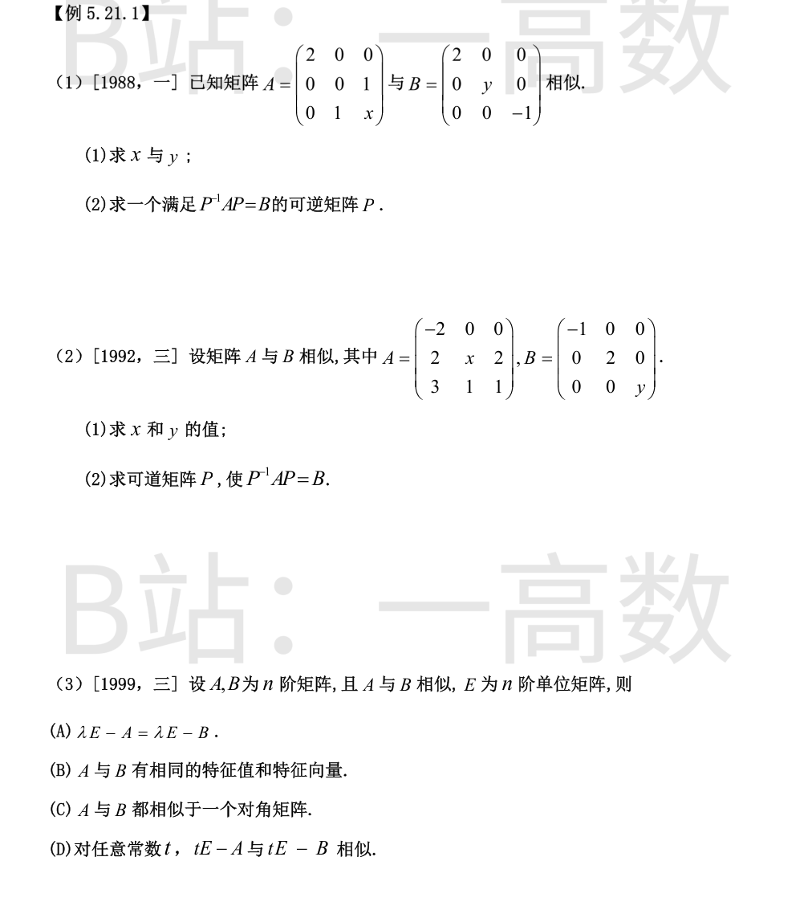
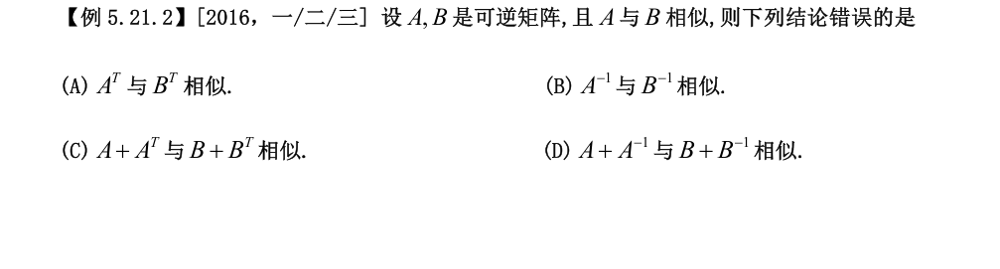
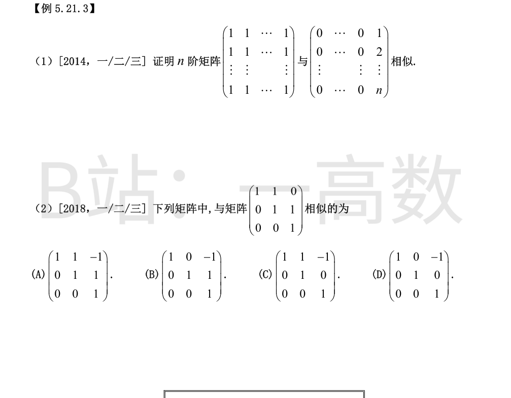
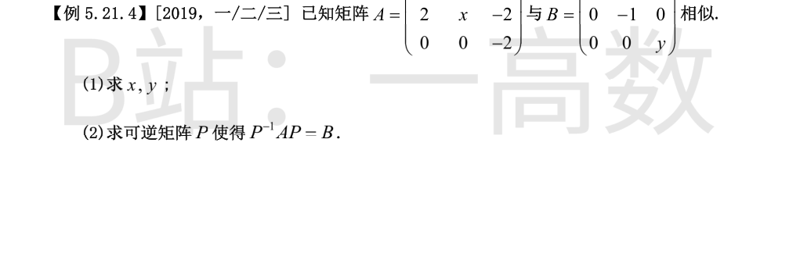

(1) A~B ⇒ 特征多项式相同。B 为对角阵，特征值 2,y,-1。
$$|\lambda E-A|=(\lambda-2)\big[\lambda(\lambda-x)-1\big]=(\lambda-2)(\lambda^{2}-x\lambda-1),$$
$$|\lambda E-B|=(\lambda-2)(\lambda-y)(\lambda+1).$$
比较 λ²-xλ-1=(λ-y)(λ+1)=λ²+(1-y)λ-y：由常数项 -1=-y 得 y=1；由一次项 -x=1-y=0 得 x=0。
(2) 此时 A=[[2,0,0],[0,0,1],[0,1,0]]，特征值 2,1,-1。分别求特征向量：
λ=2：解 (A-2E)x=0 得 ξ1=(1,0,0)^T；
λ=1：解 (A-E)x=0 得 ξ2=(0,1,1)^T；
λ=-1：解 (A+E)x=0 得 ξ3=(0,1,-1)^T。
取
$$P=(\xi_1,\xi_2,\xi_3)=\begin{pmatrix}1&0&0\\0&1&1\\0&1&-1\end{pmatrix},\quad |P|=-2\neq0,$$
则 P^{-1}AP=diag(2,1,-1)=B（列的顺序与 B 的对角元顺序一致）。
(1) A~B ⇒ tr A=tr B 且 |A|=|B|。
$$\mathrm{tr}\,A=-2+x+1=x-1=\mathrm{tr}\,B=-1+2+y=y+1\ \Rightarrow\ y=x-2.$$
$$|A|=-2\begin{vmatrix}x&2\\1&1\end{vmatrix}=-2(x-2)=4-2x,\qquad |B|=-2y.$$
联立 4-2x=-2y 与 y=x-2 得 x=0，y=-2。（校验：|λE-A|=(λ+2)[λ(λ-1)-2]=(λ+2)(λ-2)(λ+1)，特征值 2,-1,-2 与 B 一致。）
(2) B=diag(-1,2,-2)。求 A（此时 A=[[-2,0,0],[2,0,2],[3,1,1]]）的特征向量：
λ=-1：解 (A+E)x=0 得 ξ1=(0,2,-1)^T；
λ=2：解 (A-2E)x=0 得 ξ2=(0,1,1)^T；
λ=-2：解 (A+2E)x=0 得 ξ3=(1,0,-1)^T。
取
$$P=(\xi_1,\xi_2,\xi_3)=\begin{pmatrix}0&0&1\\2&1&0\\-1&1&-1\end{pmatrix},\quad |P|=3\neq0,$$
则 P^{-1}AP=diag(-1,2,-2)=B。
设 B=P^{-1}AP，则对任意常数 t：
$$tE-A=tE-PBP^{-1}=P(tE-B)P^{-1},$$
即 tE-A ~ tE-B，(D) 正确。
(A) 错：相似一般不等于相等，λE-A≠λE-B。
(B) 错：相似矩阵特征值相同，但特征向量一般不同——若 Aξ=λξ，则 B(P^{-1}ξ)=λ(P^{-1}ξ)。
(C) 错：并非所有矩阵都可对角化，如 A=[[1,1],[0,1]] 只与同为若尔当块的矩阵相似。

设 A=PBP^{-1}。
(A) 转置：A^{T}=(P^{-1})^{T}B^{T}P^{T}=(P^{T})^{-1}B^{T}P^{T}，取可逆矩阵 P^{T} 即得 A^{T}~B^{T}，正确。
(B) 求逆：A^{-1}=(PBP^{-1})^{-1}=PB^{-1}P^{-1}，即 A^{-1}~B^{-1}，正确。
(D) 相加：A+A^{-1}=PBP^{-1}+PB^{-1}P^{-1}=P(B+B^{-1})P^{-1}，即 A+A^{-1}~B+B^{-1}，正确。
(C) 错误：A=PBP^{-1} 与 A^{T}=(P^{T})^{-1}B^{T}P^{T} 所用的相似变换矩阵一般不同（一个是 P，一个是 (P^{T})^{-1}），没有共同的相似变换矩阵把 B+B^{T} 变到 A+A^{T}。
反例：取 A=[[1,1],[0,2]]（特征值 1,2 互异，可对角化）与 B=diag(1,2)，则 A~B。但
$$A+A^{T}=\begin{pmatrix}2&1\\1&4\end{pmatrix},\quad B+B^{T}=\begin{pmatrix}2&0\\0&4\end{pmatrix},$$
前者特征多项式 λ²-6λ+7，特征值 3±√2；后者特征值 2,4。特征值不同，故不相似。选 (C)。

记 e=(1,1,…,1)^T，则 A=ee^{T}。
对 A：r(A)=1，故 Ax=0 的基础解系含 n-1 个向量，即 λ=0 有 n-1 个线性无关的特征向量；又 Ae=ne，即 λ=n 是单重特征值。特征多项式为 λ^{n-1}(λ-n)（tr A=n，各2阶主子式均为 det[[1,1],[1,1]]=0，|A|=0）。几何重数=代数重数，且 A 实对称必可对角化，故
$$A\sim\Lambda=\mathrm{diag}(n,0,\cdots,0).$$
对 B：B 为上三角阵，特征值为对角元 0,…,0,n，即 0 为 n-1 重、n 为单重。B 的前 n-1 列全为零列，r(B)=1，故齐次方程 Bx=0 的解空间维数为 n-r(B)=n-1，恰等于 λ=0 的代数重数；而 λ=n 至少有一个特征向量。故 B 有 n 个线性无关的特征向量，B 可对角化，且
$$B\sim\mathrm{diag}(0,\cdots,0,n)=\Lambda.$$
（显式验证：取 ξ=(1,2,…,n)^T，(Bξ)_i=i\cdot n=n\cdot i，即 Bξ=nξ；而 e_1,…,e_{n-1} 都是 B 属于 0 的特征向量。）
由相似关系的对称性与传递性，A~Λ~B，即 A 与 B 相似。∎
各选项均为上三角阵且对角元全为 1，特征值都是 λ=1（三重）。三重特征值下相似与否取决于若尔当标准形，即 r(M-E)（决定线性无关特征向量个数 = 3 - r(M-E) = 若尔当块个数）。
原矩阵：A-E=[[0,1,0],[0,0,1],[0,0,0]]，r=2 ⇒ 特征向量个数为 1 ⇒ 只有一个若尔当块 J_3(1)。
(A) M-E=[[0,1,-1],[0,0,1],[0,0,0]]，r=2 ⇒ 特征向量 1 个 ⇒ 单块 J_3(1)，与 A 相似 ✓
(B) M-E=[[0,0,-1],[0,0,1],[0,0,0]]，r=1 ⇒ 2 个若尔当块（J_2+J_1），不相似
(C) M-E=[[0,1,-1],[0,0,0],[0,0,0]]，r=1 ⇒ 不相似
(D) M-E=[[0,0,-1],[0,0,0],[0,0,0]]，r=1 ⇒ 不相似
故选 (A)。

B 为上三角阵，特征值为 2,-1,y。A~B ⇒ 迹相等且行列式相等：
$$\mathrm{tr}\,A=-2+x-2=x-4=\mathrm{tr}\,B=2-1+y=y+1\ \Rightarrow\ y=x-5,$$
$$|A|=-2\begin{vmatrix}-2&-2\\2&x\end{vmatrix}=-2(-2x+4)=4x-8,\qquad |B|=2\cdot(-1)\cdot y=-2y.$$
联立 4x-8=-2y 与 y=x-5：4x-8=-2x+10 ⇒ 6x=18 ⇒ x=3，y=-2。
校验：|λE-A|=(λ+2)[(λ+2)(λ-3)+4]=(λ+2)(λ²-λ-2)=(λ+2)(λ-2)(λ+1)，特征值 2,-1,-2 与 B 的对角元一致 ✓。
关键点：B 不是对角矩阵（(1,2) 元为 1），不能直接用特征向量拼 P。应按 AP=PB 逐列确定 P=(p1,p2,p3)：
$$Ap_1=2p_1,\quad Ap_2=p_1-p_2,\quad Ap_3=-2p_3.$$
① p1：λ=2 的特征向量。解 (A-2E)x=0（A-2E=[[-4,-2,1],[2,1,-2],[0,0,-4]]），第三行给 x3=0，得 p1=(1,-2,0)^T。
② p3：λ=-2 的特征向量。解 (A+2E)x=0（[[0,-2,1],[2,5,-2],[0,0,0]]），：由 -2x2+x3=0 得 x3=2x2，代入 2x1+5x2-2x3=0 得 x1=-x2/2；取 x2=-2 得 p3=(1,-2,-4)^T（验证 Ap3=(-2,4,8)^T=-2p3 ✓）。
③ p2：解非齐次方程组 (A+E)p2=p1，即 [[-1,-2,1],[2,4,-2],[0,0,-1]]p2=(1,-2,0)^T：第三行给 x3=0，前两行为同一方程 x1+2x2=-1。取特解 p2=(-1,0,0)^T（通解为 (-1,0,0)^T+t(-2,1,0)^T）。
于是
$$P=\begin{pmatrix}1&-1&1\\-2&0&-2\\0&0&-4\end{pmatrix},\quad |P|=-8\neq0.$$
逐列验证 AP=PB：Ap1=(2,-4,0)^T=2p1 ✓；Ap2=(2,-2,0)^T=p1-p2 ✓；Ap3=(-2,4,8)^T=-2p3 ✓。故 P^{-1}AP=B，答案不唯一。